Manual de Usuario del Sistema de Indicadores
Guía de operación integral para funcionarios, enlaces de secretarías y administradores. Describe el comportamiento del sistema, notificaciones de respuesta, geovisor de cobertura, consulta pública con descarga CSV y diccionario exhaustivo de cada formulario.
1. Mecanismo de Respuestas del Sistema (Notificaciones Toast)
El sistema de información implementa un protocolo visual de retroalimentación inmediata mediante mensajes emergentes flotantes (Toasts) que se proyectan en la esquina superior derecha de la pantalla ante cualquier acción ejecutada por el usuario:
✖ en la esquina de la notificación.
2. Políticas de Seguridad, Mínimo Privilegio y Asignación de Roles
La confiabilidad de los indicadores departamentales requiere que todos los usuarios sigan estrictas normas de seguridad de la información:
1. Contraseñas Robustas
Las claves deben tener mínimo 10 caracteres e incluir letras mayúsculas, minúsculas, números y caracteres especiales. Queda terminantemente prohibido compartir contraseñas institucionales o anotarlas en lugares visibles.
2. Principio de Mínimo Privilegio
A cada funcionario se le debe asignar única y exclusivamente el nivel de acceso indispensable para cumplir con sus funciones laborales (por ejemplo, perfil Consultor si solo va a generar reportes de lectura).
3. Segmentación por Secretaría
Cada rol debe estar estrictamente vinculado a la secretaría correspondiente (ej. Secretaría de Salud). Esto garantiza que un enlace sectorial no pueda modificar o borrar accidentalmente datos de otra dependencia.
3. Portal Web Ciudadano (Landing Page)
Accesible en https://dha-san.nortedesantander.gov.co/ de manera pública sin requerir registro ni contraseña:
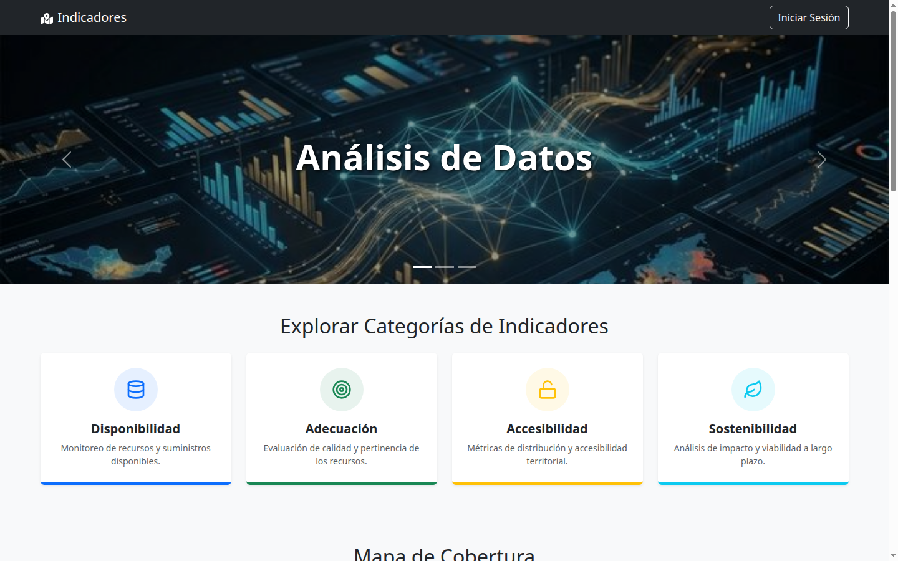
3.1. Mapa Departamental de Cobertura
En la página principal se presenta el Mapa de Cobertura interactivo con el lema: "Explora nuestra presencia en los municipios de Norte de Santander":
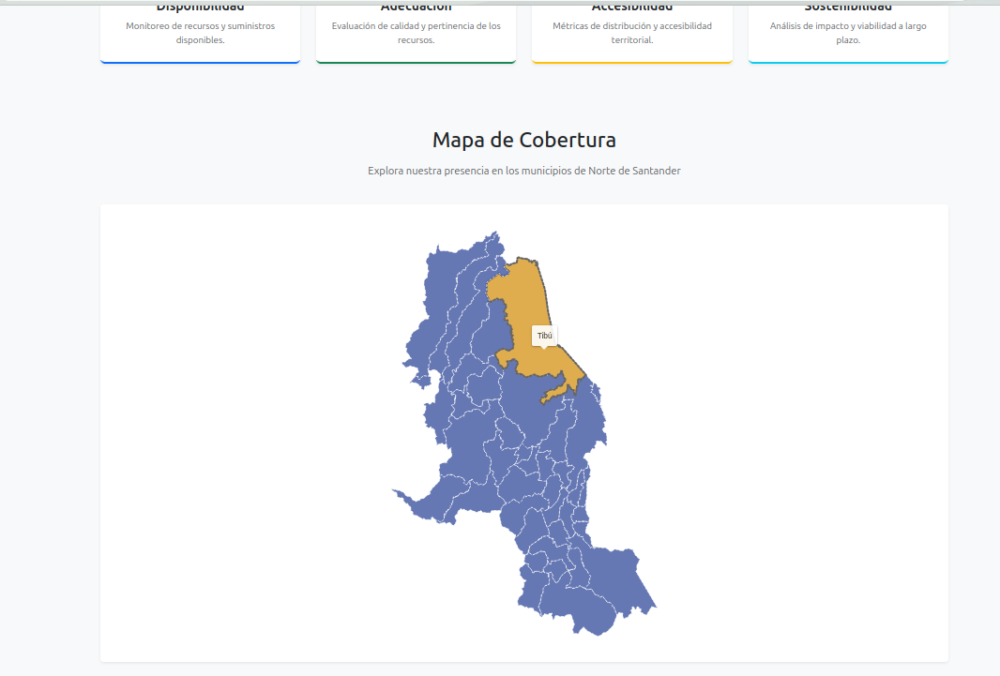
4. Consulta Pública por Tipo de Indicador y Descarga CSV
Al hacer clic en cualquiera de las cuatro dimensiones temáticas desde la Landing Page (ejemplo: https://dha-san.nortedesantander.gov.co/indicadores/tipo/Disponibilidad), se abre la vista de análisis público detallado:
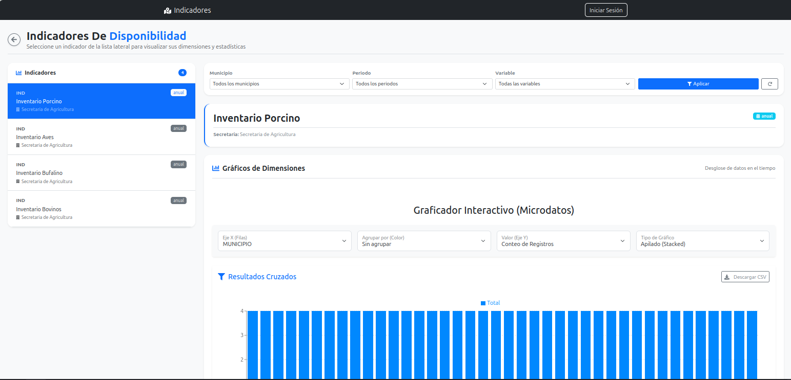
4.1. Menú Lateral (Sidebar) de Indicadores del Tipo
- Estar marcados con el estado "Indicador Activo" (
es_activo = 1). - Estar clasificados dentro de la categoría seleccionada (ej. Disponibilidad).
4.2. Graficador Interactivo y Filtros de Microdatos
Permite a los usuarios realizar tabulaciones cruzadas y explorar las dimensiones del indicador mediante cuatro controles superiores:
| Selector / Filtro | Opciones / Valores | Propósito Analítico |
|---|---|---|
| Eje X (Filas) | MUNICIPIO, AÑO, o cualquier dimensión del indicador. | Define la variable o territorio que se desplegará horizontalmente en la base del gráfico. |
| Agrupar por (Color) | "Sin agrupar" o dimensiones cualitativas (Sexo, Vereda, Tipo). | Genera una leyenda de colores diferenciados para realizar comparaciones cruzadas dentro de cada barra. |
| Valor (Eje Y) | "Conteo de Registros", "Sumatoria", "Promedio". | Determina la operación matemática o agregación que define la altura de las barras. |
| Tipo de Gráfico | "Apilado (Stacked)", "Barras Agrupadas", "Línea Continua". | Permite cambiar dinámicamente la visualización visual según la preferencia del analista. |
4.3. Descarga de Datos Abiertos (Botón "Descargar CSV")
En concordancia con los principios de Gobierno Abierto e Interoperabilidad, en la cabecera de la sección Resultados Cruzados se encuentra el botón "Descargar CSV" (📥):
- Formato Estándar: Genera un archivo
.csvdelimitado por comas con codificación UTF-8 con BOM (Byte Order Mark) para compatibilidad inmediata con Microsoft Excel. - Utilidad Ciudadana: Permite que líderes comunitarios, veedurías, periodistas e investigadores universitarios descarguen la matriz de datos procesada para realizar estudios independientes, auditorías sociales o análisis estadísticos en herramientas externas como Power BI, R o Python.
5. Autenticación de Funcionarios (Login)
Para acceder al panel privado de gestión, ingrese a https://dha-san.nortedesantander.gov.co/login:
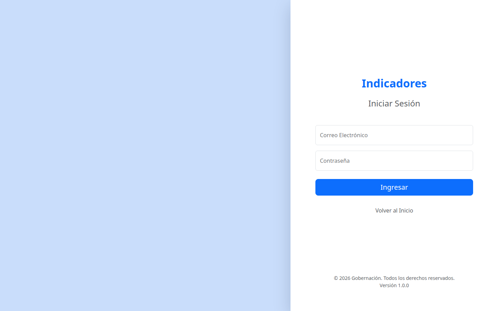
6. Dashboard de Control Administrativo
Pantalla de bienvenida e indicadores de gestión que se despliega tras iniciar sesión:
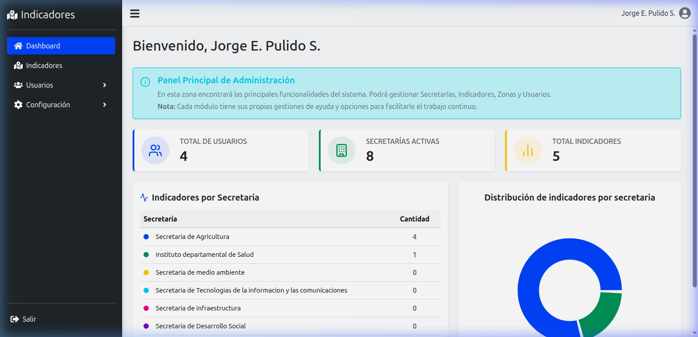
7. Módulo de Gestión de Indicadores
Permite a los funcionarios autorizados crear y administrar la ficha técnica de cada indicador:
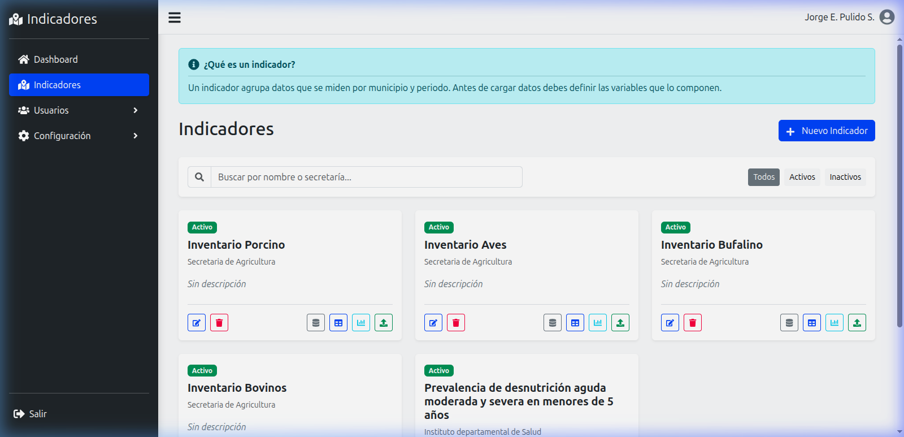
7.1. Diccionario de Campos: Formulario de Creación / Edición de Indicador
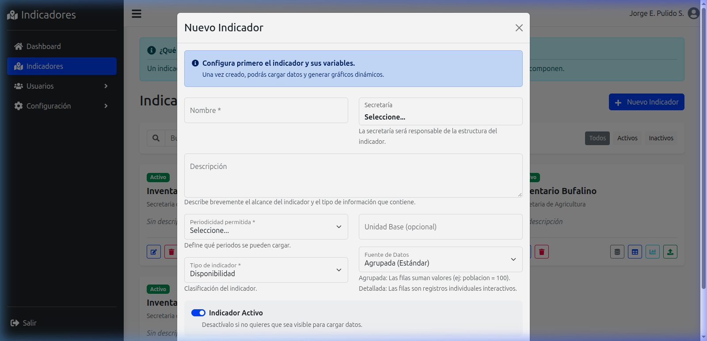
8. Diferencias entre Indicadores por Agrupación y Microdatos
La selección de la Fuente de Datos define cómo opera toda la cadena de captura y visualización:
| Criterio | Modo Agrupada (Estándar) | Modo Detallada (Microdatos) |
|---|---|---|
| Estructura del Dato | Consolidados territoriales agregados (ej. Total de Familias Atendidas = 1,200). | Registros individuales caso a caso (ej. Cada beneficiario censado con sus atributos). |
| Filas en Plantilla Excel | 1 sola fila por cada municipio en un periodo (ej. 40 filas por año). | Múltiples filas para un mismo municipio (ej. 1,500 beneficiarios en Cúcuta). |
| Analítica Disponible | Comparativa territorial entre municipios, evolución temporal, totales departamentales. | Conteo de casos, distribución por rangos de edad, tabulaciones cruzadas y descarga CSV. |
| Ejemplos Institucionales | Secretaría de Hacienda (Presupuesto por municipio), Infraestructura (km de vías pavimentados). | Secretaría de Salud (Casos de dengue), Víctimas (Familias registradas), Educación (Estudiantes matriculados). |
9. Definición y Tipificación de Variables
Permite estructurar las columnas de datos que compondrán cada registro del indicador (ejemplo real: Inventario Porcino):
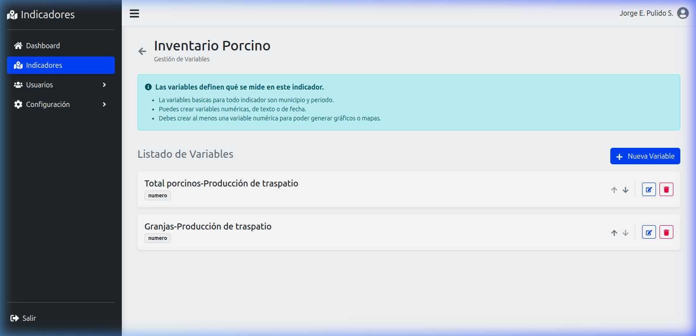
10. Carga de Información (Manual y Masiva en Excel)
Ofrece dos modalidades de alimentación de datos:
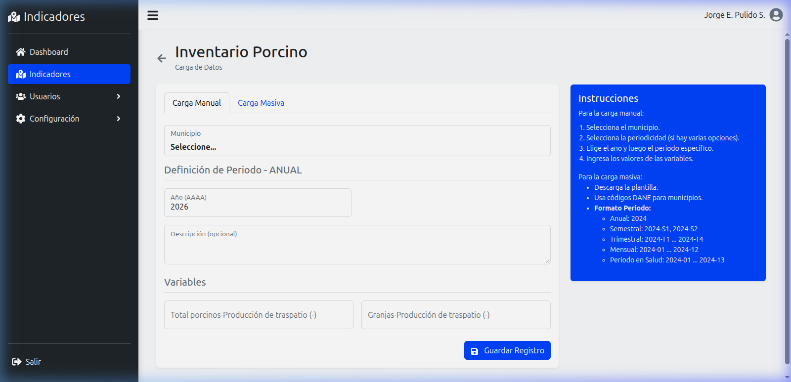
11. Configuración de Visualizaciones y Gráficos
Permite predeterminar cómo se proyectará el indicador en los tableros analíticos y en la Landing Page:
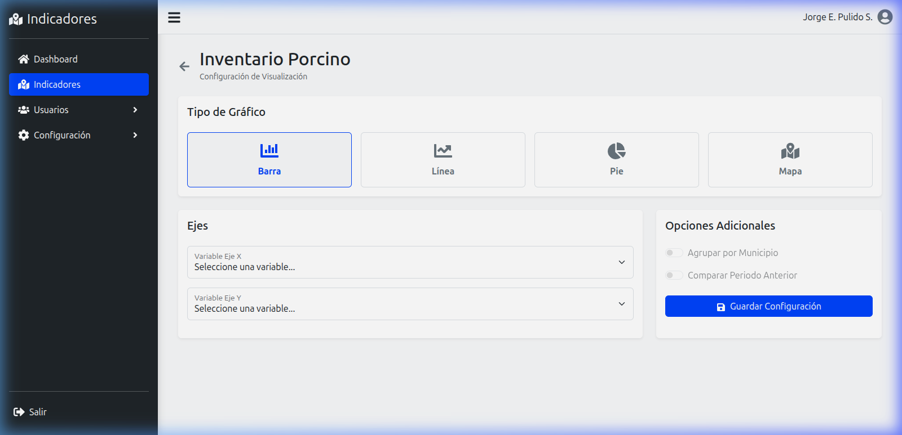
12. Administración de Usuarios y Roles
Módulo exclusivo para el Administrador General para gestionar el personal y los permisos del sistema:
12.1. Gestión de Usuarios
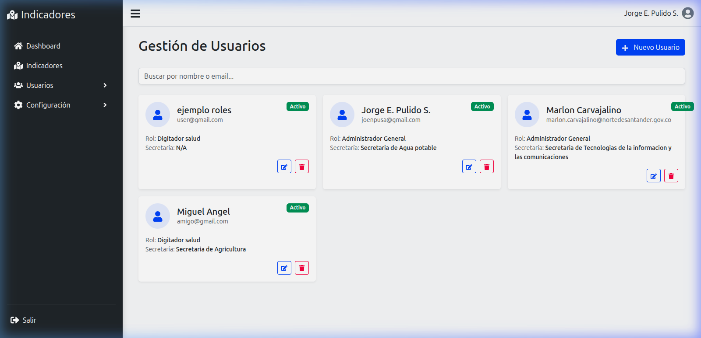
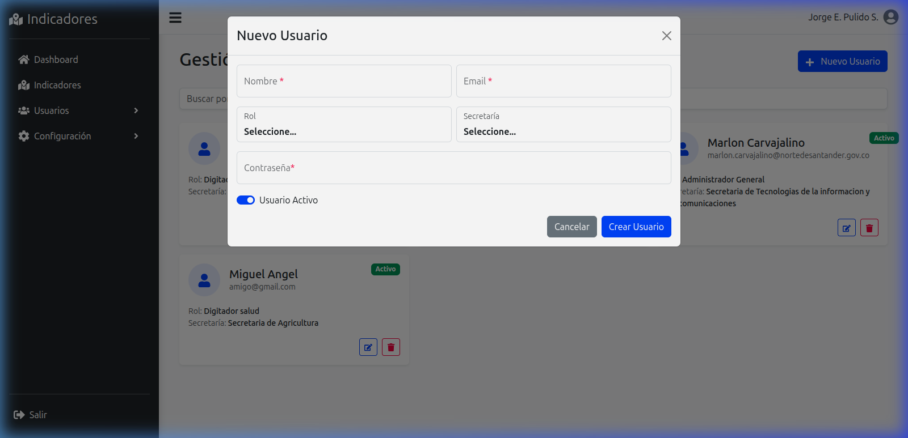
12.2. Gestión de Roles y Permisos
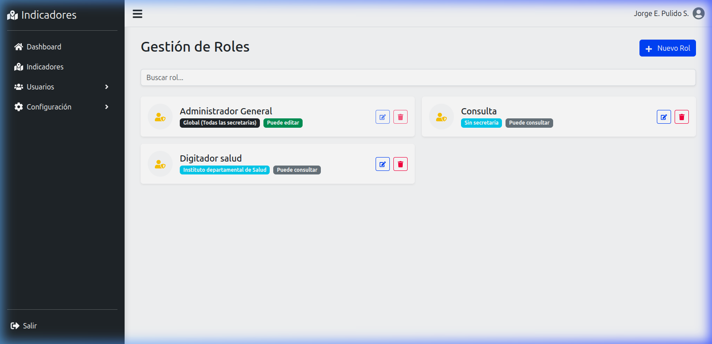
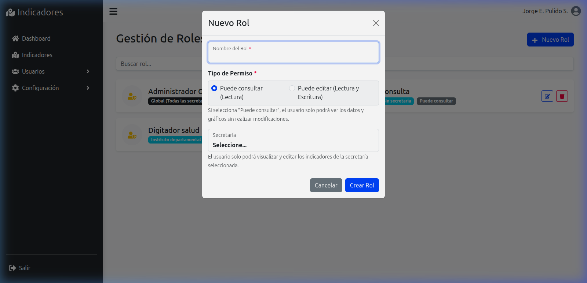
13. Configuración Institucional: Secretarías y Municipios
13.1. Módulo de Secretarías
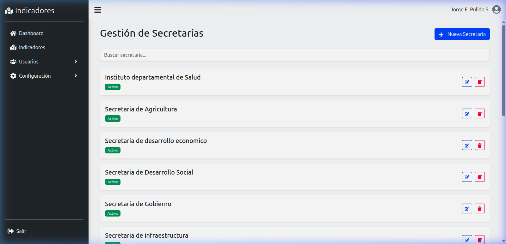
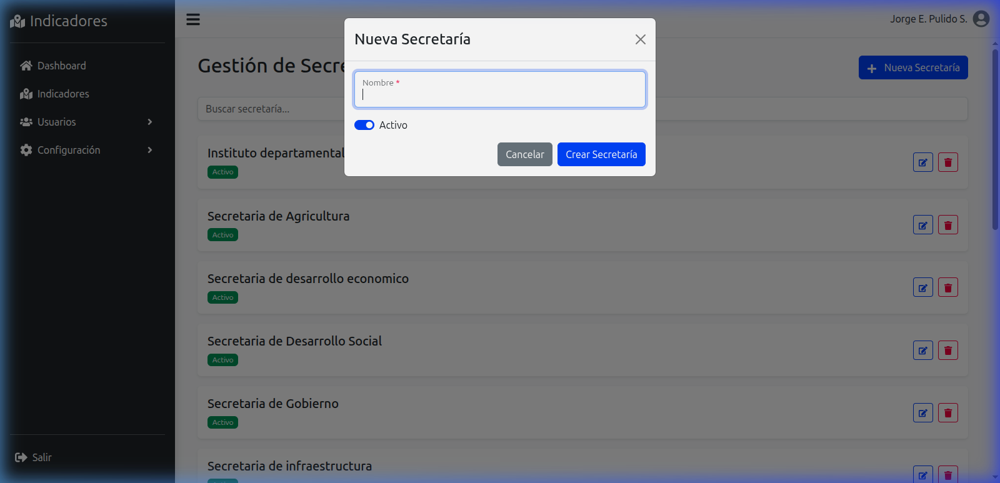
13.2. Módulo de Municipios y Zonas
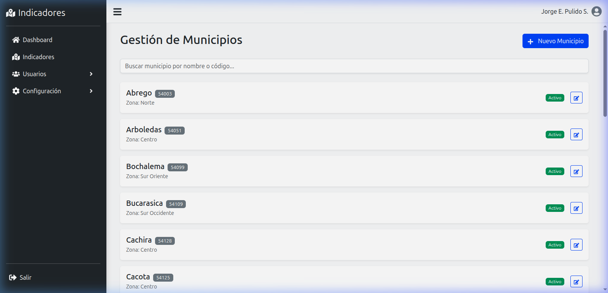
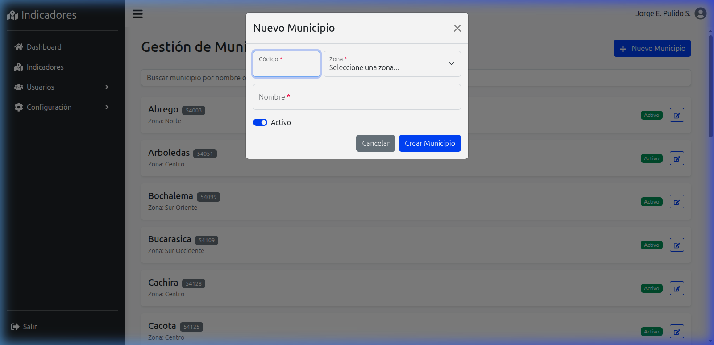
14. Preguntas Frecuentes (FAQ) y Soporte Técnico
¿Por qué el sistema rechaza mi archivo Excel al intentar cargarlo?
Las razones más frecuentes son: 1) Se modificaron los nombres de los encabezados de la plantilla original; 2) El código DANE del municipio no coincide con los 40 municipios de Norte de Santander; 3) Se ingresó texto en columnas definidas como tipo "número"; 4) Se dejaron en blanco celdas de variables marcadas como "Obligatorias". Descargue siempre una plantilla limpia desde la opción "Descargar Plantilla Excel" del indicador.
¿Por qué mi nuevo indicador no aparece en la Landing Page ni en la sección pública?
Verifique en la ficha del indicador que el interruptor "Indicador Activo" esté encendido (azul). Si el indicador está inactivo, el sistema lo mantiene oculto del público y del menú lateral para permitir que el funcionario trabaje en modo borrador hasta que los datos estén consolidados.
¿Cómo reordenar las variables para que aparezcan en una posición específica en Excel?
En el módulo de Variables del indicador, use las flechas ▲ y ▼ para mover cada variable hacia arriba o hacia abajo. Al pulsar guardar, la plantilla Excel descargada reflejará exactamente el orden configurado.
¿Dónde solicitar soporte técnico o creación de nuevas cuentas de funcionario?
Comuníquese con la Dirección de Tecnologías de la Información y las Comunicaciones (TIC) o con el Administrador General del sistema (joenpusa@gmail.com) en la Gobernación de Norte de Santander.